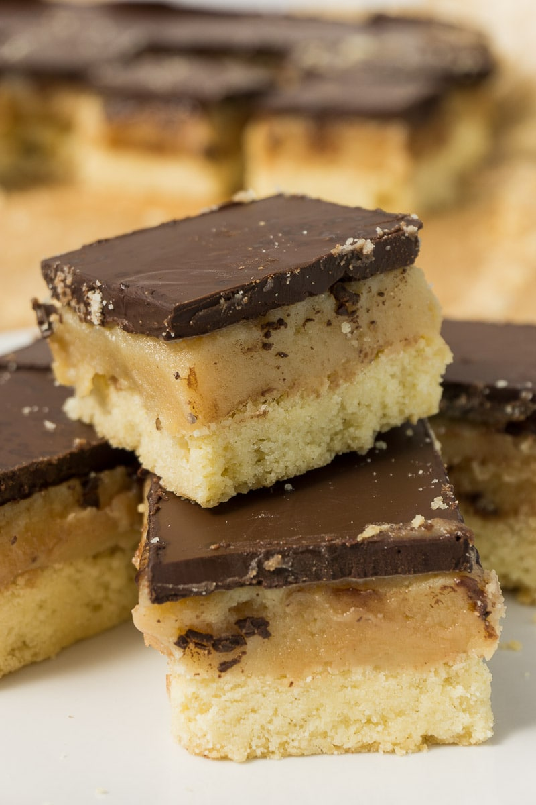

Back to Home
Toffee Shortbread

Description
This is a scottish recipe also known as "Millionare's Shorbread" made with toffee and chocolate on top of shortbread. It's a perfect gift to hand out during christmas or to new neighbors!
Ingredients
flour
softened butter
sugar
chocolate
vanilla extract
you'll need: candy thermometer
Steps
Combine flour, butter, and sugar in a bowl
Knead dough until well combined, then put in fridge for 2 hours
When dough is properly cooled, spread evenly into a greased pan and bake at 375 degrees for 9-12 minutes until edges are browned
Heat butter and sugar in a saucepan until candy reaches 425 degrees
Pour candy/toffee mix on cooled shortbread
Melt chocolate (combine with coconut oil to help with the melting process) and pour on top of hardened toffee.
Serve when cooled.